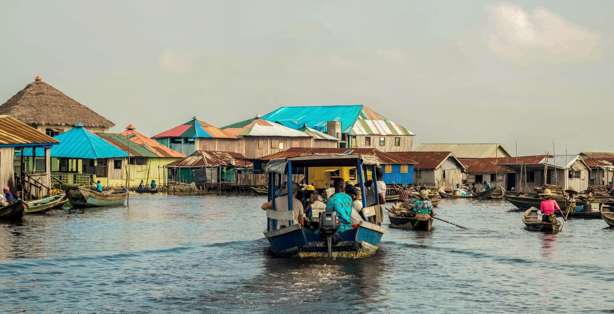
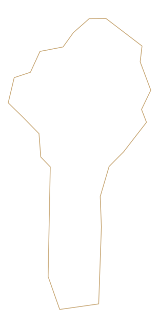
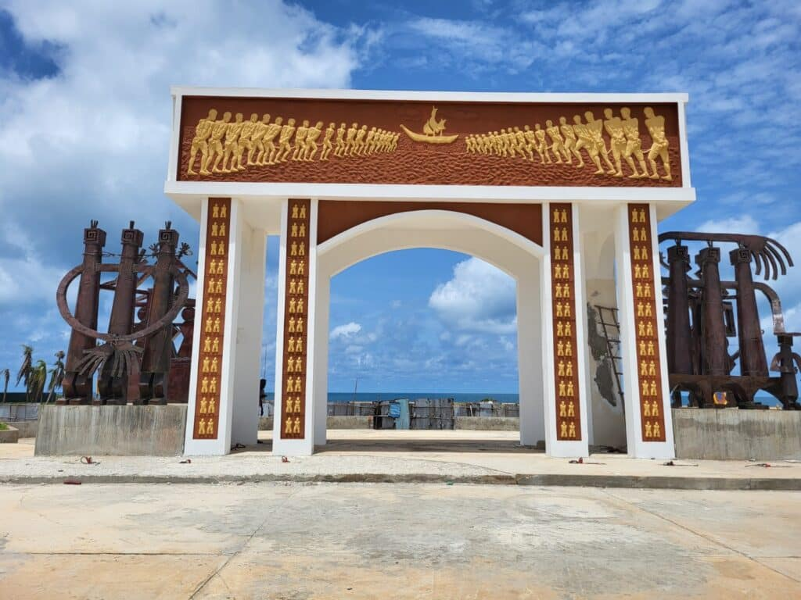
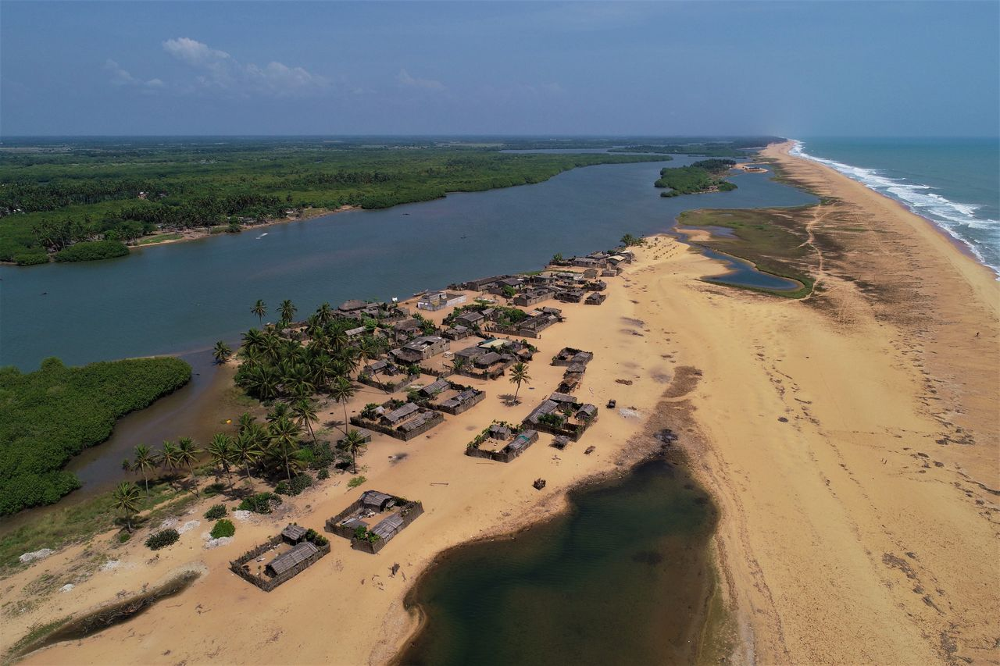
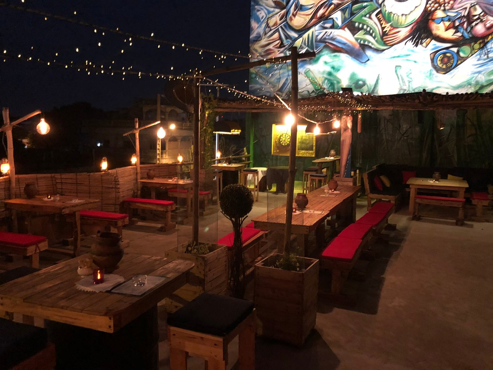

Photo : Wikimedia Commons
Cinquante adresses choisies, neuf territoires, trois itinéraires. Un carnet de route pour découvrir le Bénin autrement.
« Au Bénin, les plus beaux endroits ne sont pas toujours ceux que l’on montre. »
Ce carnet est né d’une conviction simple : le Bénin se découvre mieux en dehors des circuits balisés. Derrière une plage, un marché, une porte de pierre, il y a toujours une histoire que l’on ne raconte pas dans les guides classiques.
Nous avons parcouru le pays, comparé les lumières, écouté les habitants, puis retenu cinquante lieux. Cinquante, pas un de plus : ceux qui méritent le détour, le lever de soleil et parfois la patience.
Ce spécimen de dix pages présente la maquette, la hiérarchie typographique et le rythme éditorial du guide complet. Les textes et les visuels y sont proposés à titre de validation.
Bonne route — et prenez le temps.
Bénin, les lieux secrets
Neuf chapitres, cinquante fiches et un carnet pratique pour composer votre propre route.
Chaque chapitre s’ouvre par une carte, se poursuit par les fiches et se referme sur un carnet d’adresses.
Comment lire ce guideIntroduction
Le Bénin tient dans un geste : une pirogue qui s’éloigne, une porte qui s’ouvre sur l’océan, un marché qui s’éveille. En apparence petit, le pays déploie une densité rare — lagunes, savanes, palais, forêts sacrées, plages sans fin.
Ce guide n’est pas un inventaire. C’est une sélection. Cinquante lieux choisis pour leur beauté, leur histoire ou leur capacité à provoquer un souvenir. Autour d’eux, un répertoire de 296 adresses pour composer votre propre route.
Neuf chapitres, neuf territoires. Chacun s’ouvre sur une carte, des repères et nos conseils de terrain. À la fin, trois itinéraires — quatre, sept ou dix jours — et un agenda pour attraper les fêtes au bon moment.
« Le Bénin ne se raconte pas. Il se traverse, lentement, du sud au nord. »

Entre la porte du Non-Retour et les canaux de Ganvié, l’Atlantique raconte deux histoires : celle du départ et celle de la résistance. Ici, chaque village a gardé sa mémoire, chaque plage son secret.
Sô-Ava · Atlantique
La « Venise de l’Afrique » et ses canaux secrets
Ganvié est née de l’eau et de la nécessité. Au cœur du lac Nokoué, ce village de pilotis fut fondé par le peuple Tofinu pour échapper aux razzias. Aujourd’hui encore, tout s’y organise autour de la pirogue : le marché, l’école, les visites, les rires.
On y glisse entre les maisons comme dans une rue liquide. Le matin, les reflets découpent les façades de bois ; les pêcheurs relèvent les nasses, les enfants pagayent seuls. C’est un lieu fragile, à regarder et à respecter.
Le conseil SecretScape
Embarquez à la rive de Sô-Ava avant 09h00 et demandez une pirogue à pagaie, plus silencieuse qu’un moteur. Vous entrerez dans le village par les canaux du marché, au moment où il s’éveille.
Ganvié, commune de Sô-Ava, lac Nokoué.
30 min de Cotonou jusqu’à Sô-Ava, puis 20 min de pirogue. Départ conseillé à 07h00.
Prévoyez de l’eau et une protection solaire : l’accès se fait uniquement en barque.

Grand-Popo · MonoL’embouchure du Mono, côté océan.
L’accès se fait par la plage ou par pirogue. Prévoyez de l’eau, une protection solaire et un peu de marge : la marée décide du chemin.
Grand-Popo · Mono
Là où le fleuve Mono embrasse l’Atlantique
Le fleuve Mono finit sa course ici, dans l’Atlantique, en dessinant un delta mouvant de sable et de lumière. Selon la marée, le chenal se referme, s’ouvre, déplace les bancs de sable. Le paysage n’est jamais le même.
On vient pour le silence, les oiseaux, l’horizon brut. À l’aube, la lumière rase les dunes ; au crépuscule, l’eau prend la couleur du cuivre. C’est l’un des rares endroits du littoral où l’on entend encore le vent.
Le conseil SecretScape
Longez la plage vers l’est après le village d’Agoué, ou remontez le fleuve en pirogue à marée basse pour voir le chenal se reformer.
Bouche du Roi, commune de Grand-Popo. À 1h15 de Ouidah par la route côtière ; demandez le passage en pirogue au village d’Agoué.
Ici, le fleuve et l’océan se disputent la lumière.
À la marée montante, le paysage se réinvente en quelques minutes.
Tables & saveurs
Douze tables choisies pour leur cuisine, leur cadre ou leur art de recevoir. Des adresses simples, vivantes, souvent loin des cartes postales.
Fidjrossè · Cotonou
Le grill branché de la plage
À Fidjrossè, la nuit commence souvent par un grill. Jaaba a l’ambiance des bonnes adresses de quartier : tables dehors, braises visibles, musique juste assez forte pour engager la conversation.
On y vient après la plage, pour partager un poisson grillé, des brochettes et un cocktail en regardant la rue s’animer. Le service est détendu ; l’assiette, généreuse. C’est le genre d’adresse qu’on se transmet.

Jaaba · FidjrossèLes douze tables sont réparties dans les neuf chapitres. Chaque fiche indique l’ambiance, le bon moment et notre conseil de terrain.
Carnet pratique · Itinéraire
Le grand tour classique, pensé pour prendre le temps : deux jours sur la côte, un détour par l’histoire, puis la route du nord jusqu’aux savanes. Toutes les étapes sont reliées en voiture avec chauffeur.
Cotonou · Ganvié · Ouidah · Grand-Popo. L’essentiel du littoral, sans le nord.
Ajoutez Porto-Novo, la Pendjari et le pays Tanéka. Le guide détaille les étapes et les temps de route.
Spécimen de maquette — 10 pages
Le Bénin ne se visite pas.
Il se découvre.
Un guide pensé pour le voyageur curieux : à feuilleter avant de partir, à garder sous la main pendant la route, à transmettre à ceux qui prendront le même chemin.
Guide numérique · Format A4 · Édition 2026
© SecretScape — Tous droits réservés